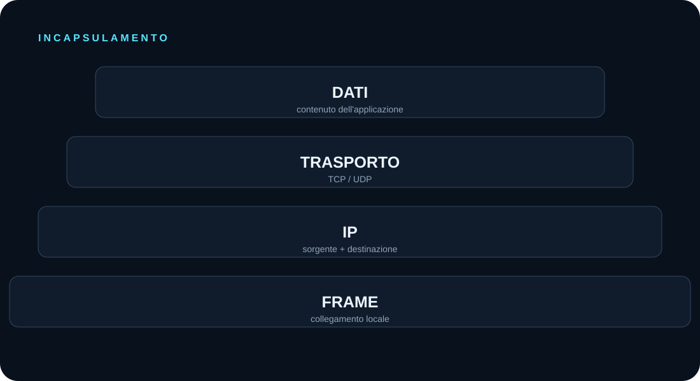

DATI
Il contenuto prodotto dall'applicazione.
TRASPORTO
Informazioni del livello di trasporto, per esempio TCP o UDP.
IP
Informazioni per identificare sorgente e destinazione IP.
FRAME
Informazioni relative al collegamento locale.
Durante una comunicazione i dati vengono trasportati attraverso unità che possiamo osservare nella cattura.

Wireshark ci permette di osservare i pacchetti e di seguirne la sequenza nel tempo.
Il contenuto prodotto dall'applicazione.
Informazioni del livello di trasporto, per esempio TCP o UDP.
Informazioni per identificare sorgente e destinazione IP.
Informazioni relative al collegamento locale.
Il timestamp di ogni pacchetto permette di seguire l'ordine degli eventi. È uno degli indizi più importanti durante un'analisi.